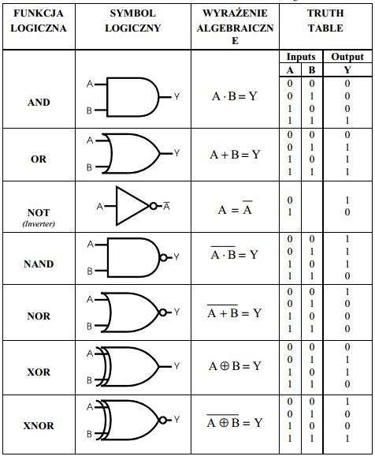
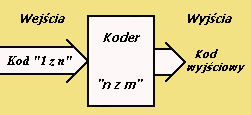
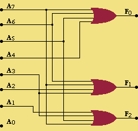
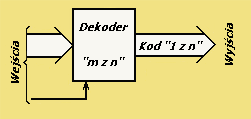
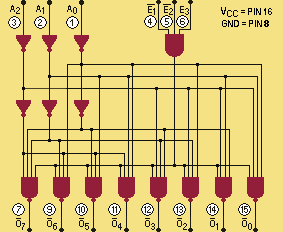
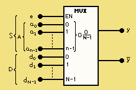
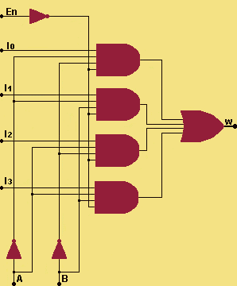
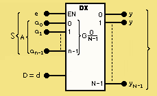
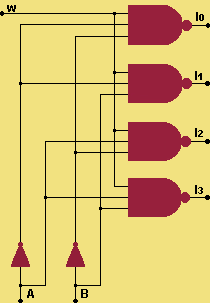

SAME BRAMKI

KODER
Koderami (lub enkoderami) są nazywane układy służące do przetworzenia kodu "1 z n" podanego na wejście układu w określony dwójkowy kod wyjściowy. Kodery są stosowane głównie do wprowadzania informacji w postaci liczb dziesiętnych do systemów cyfrowych. Na wyjściu kodera pojawia się stan odpowiadający "numerowi" wyróżnionego wejścia, przedstawiony w żądanym kodzie dwójkowym.


DEKODER
Dekoderem jest nazywany układ realizujący zamianę dowolnego kodu dwójkowego na kod pierścieniowy "1 z n". Zatem zadanie dekodera jest odwrotne niż kodera.


MULTIPLEKSER
Układ zwany multiplekserem umożliwia wybór i przesłanie na wyjście y sygnału z jednego z N wejść informacyjnych dk. Numer wejścia k {0,1,...,N-1}=N jest wyznaczany przez stan A wejść adresowych, określany krótko jako adres. Multiplekser realizuje zatem funkcję wielopołożeniowego przełącznika z cyfrowym wyborem pozycji.


DEMULTIPLEKSER
Demultiplekser jest układem elektronicznym, posiada jedno wejście danych i trzy sterujące oraz kilka wyjść. Zasada działania tego elementu pozwala na wybór jednego z wyjść i przesłanie na nie sygnału wejściowego. Wyboru wyjścia dokonujemy za pośrednictwem wejść sterujących (adresowych). Pozostałe wyjścia pozostają w stanie L lub H w zależności od konkretnego typu demultipleksera.


⚜ Zespół Szkół Ponadgimnazialnych nr.1 | CHEMA0156 | FACEBOOK | ver.0.4 ⚜